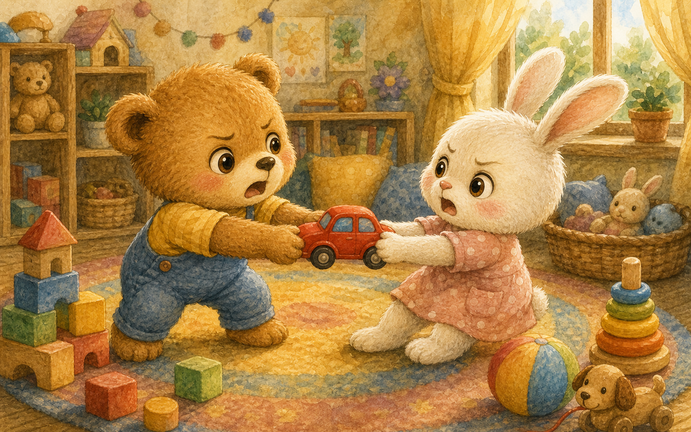
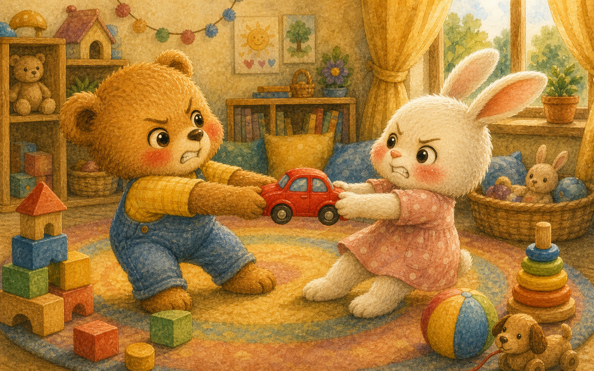
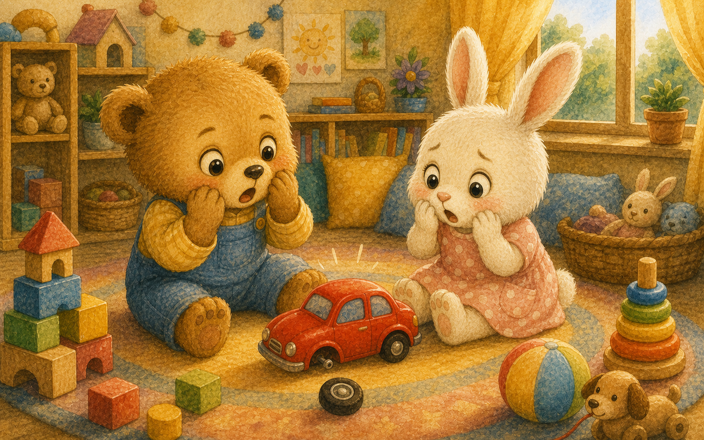
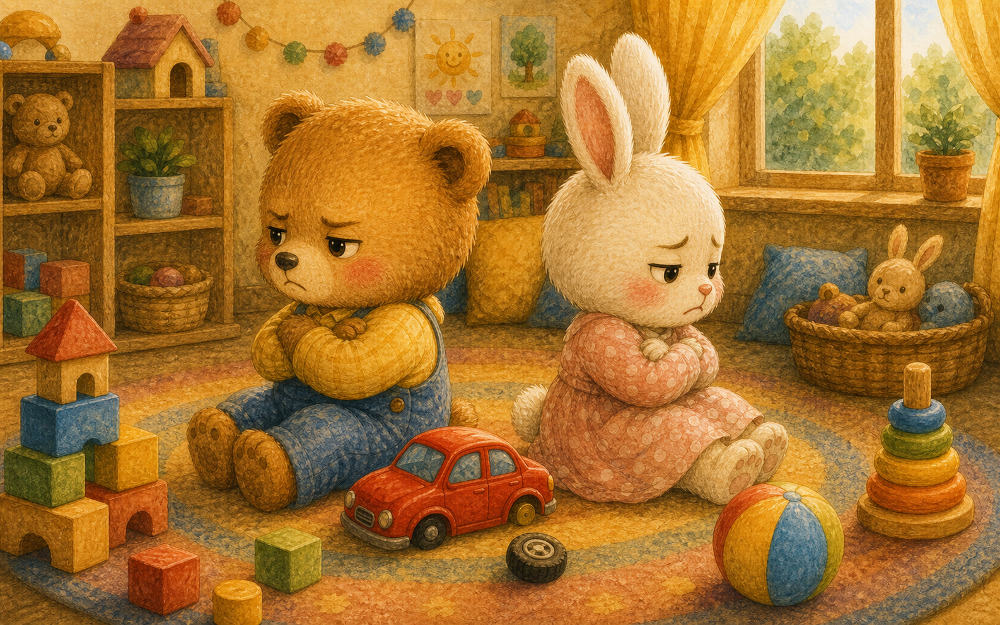
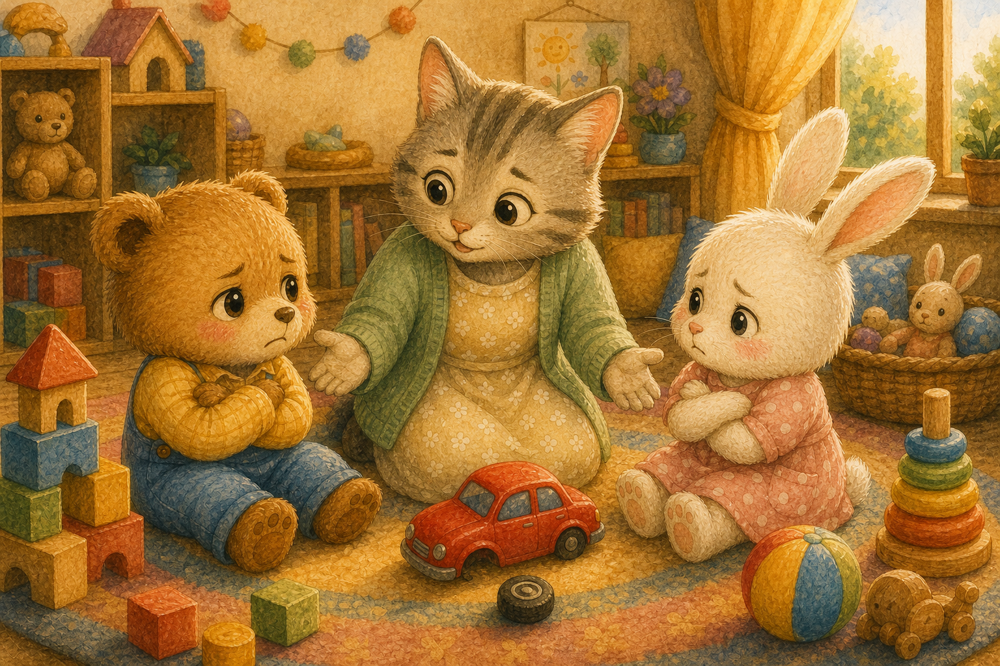
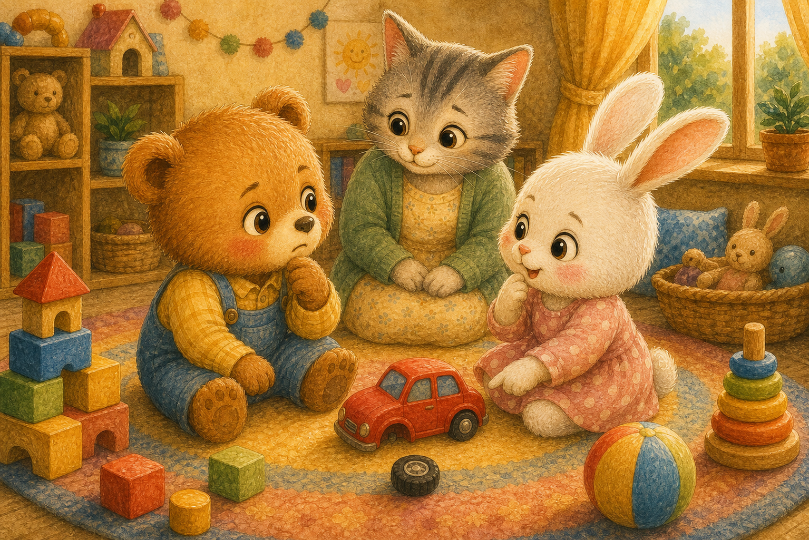
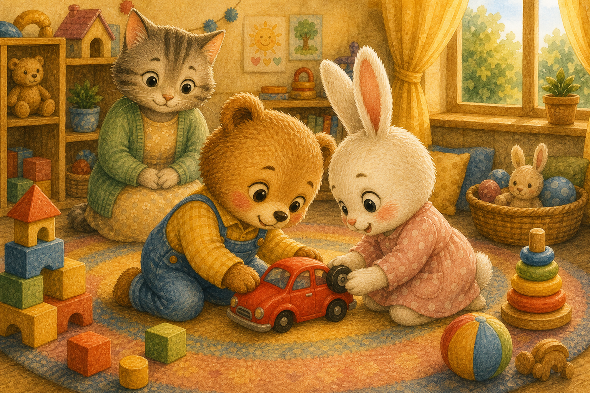
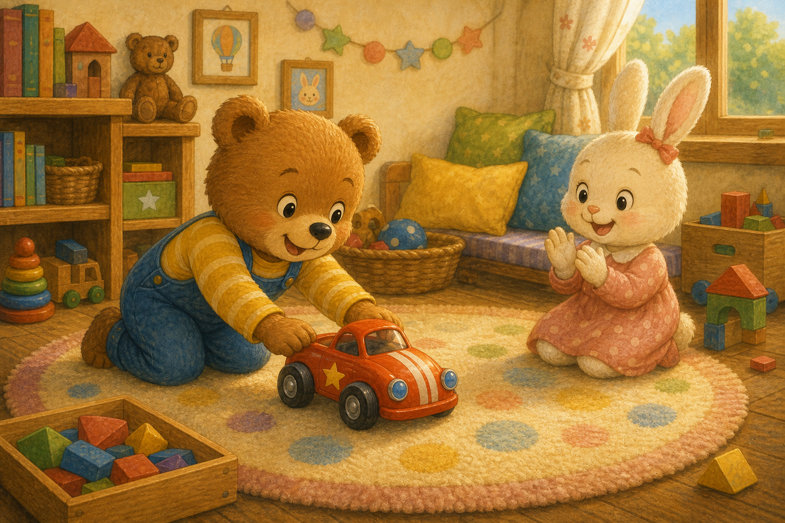
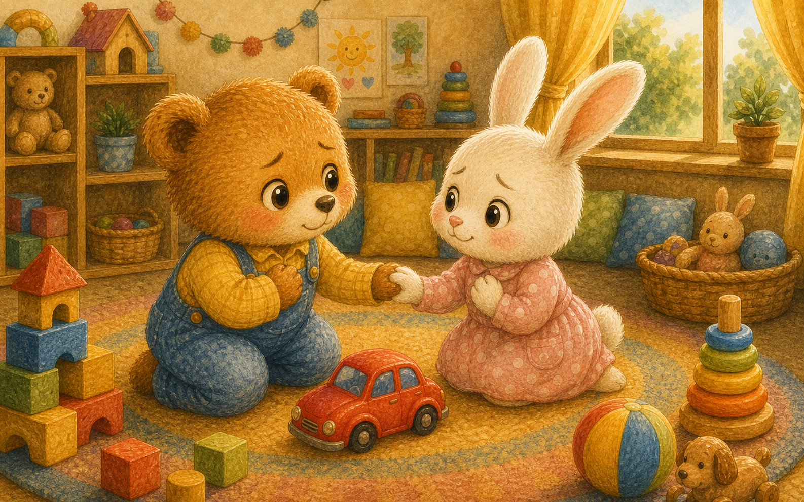
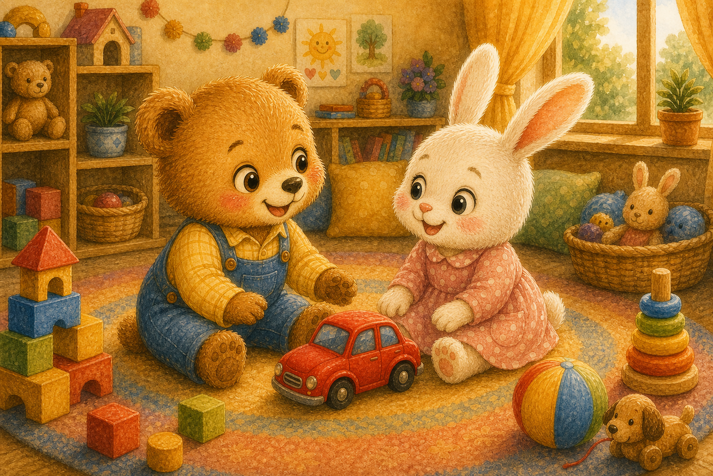

빨간 자동차
놀이방에 멋진 빨간 자동차가 딱 하나 있었어요. 곰돌이와 토끼가 동시에 그 자동차를 잡았지요.
"내가 먼저 봤어!" "아니, 내가 먼저야!"

놀이방에 멋진 빨간 자동차가 딱 하나 있었어요. 곰돌이와 토끼가 동시에 그 자동차를 잡았지요.
"내가 먼저 봤어!" "아니, 내가 먼저야!"

둘은 자동차를 양쪽에서 힘껏 잡아당겼어요. 얼굴은 점점 빨개지고 마음은 답답해졌지요.
"이건 내 거야!"

그때 자동차 바퀴 하나가 덜컥 빠져 버렸어요. 둘은 깜짝 놀라 동시에 손을 멈췄답니다.
"어떡해… 망가졌어."

둘은 시무룩하게 등을 돌리고 앉았어요. 다투고 나니 자동차도 마음도 즐겁지 않았지요.
화를 내도 하나도 신나지 않았어요.

선생님 고양이가 다가와 부드럽게 물었어요. 하나뿐인 장난감, 어떻게 하면 둘 다 즐거울까 하고요.
"같이 쓰는 방법은 없을까?"

곰돌이가 먼저 "번갈아 타면 어때?"라고 말했어요. 토끼도 좋다며 고개를 끄덕였지요.
"차례를 정하면 둘 다 탈 수 있어!"

둘은 머리를 맞대고 빠진 바퀴를 다시 끼웠어요. 함께 고치니 자동차가 금세 멀쩡해졌답니다.
"같이 하니까 금방 됐다!"

곰돌이가 먼저 자동차를 밀고, 다음엔 토끼가 탔어요. 차례를 지키니 다툼 없이 더 신났지요.
"이번엔 네 차례야, 자!"

둘은 서로에게 미안하다고, 또 고맙다고 말했어요. 마음의 매듭이 사르르 풀렸답니다.
"아까는 미안했어." "나도 미안해."

혼자 갖겠다고 다툴 때보다 같이 나눌 때 훨씬 즐거웠어요. 곰돌이와 토끼는 가장 친한 친구가 되었답니다.
"나눠 쓰니까 두 배로 재밌어!"